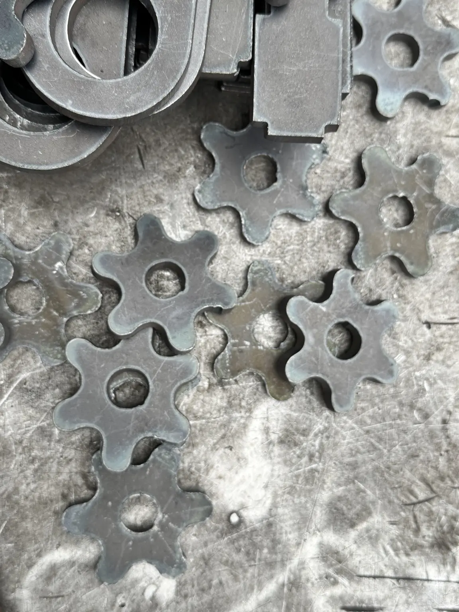
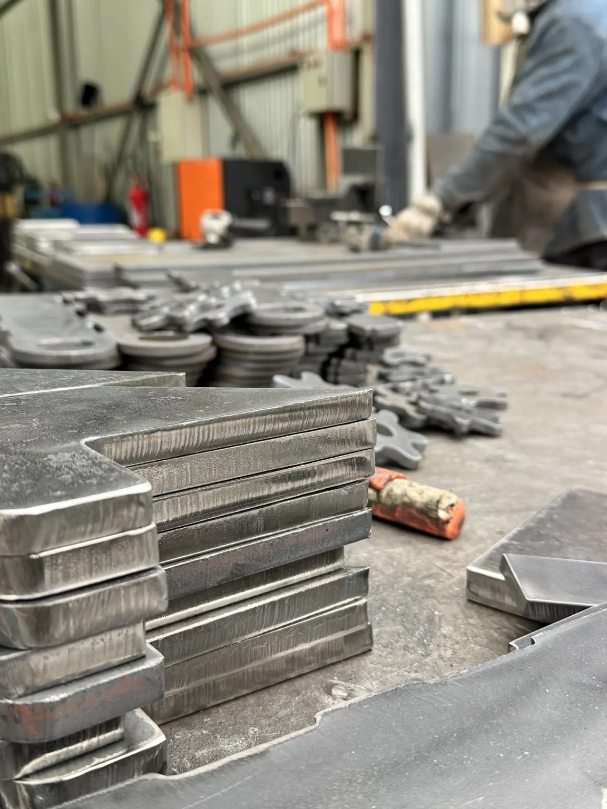
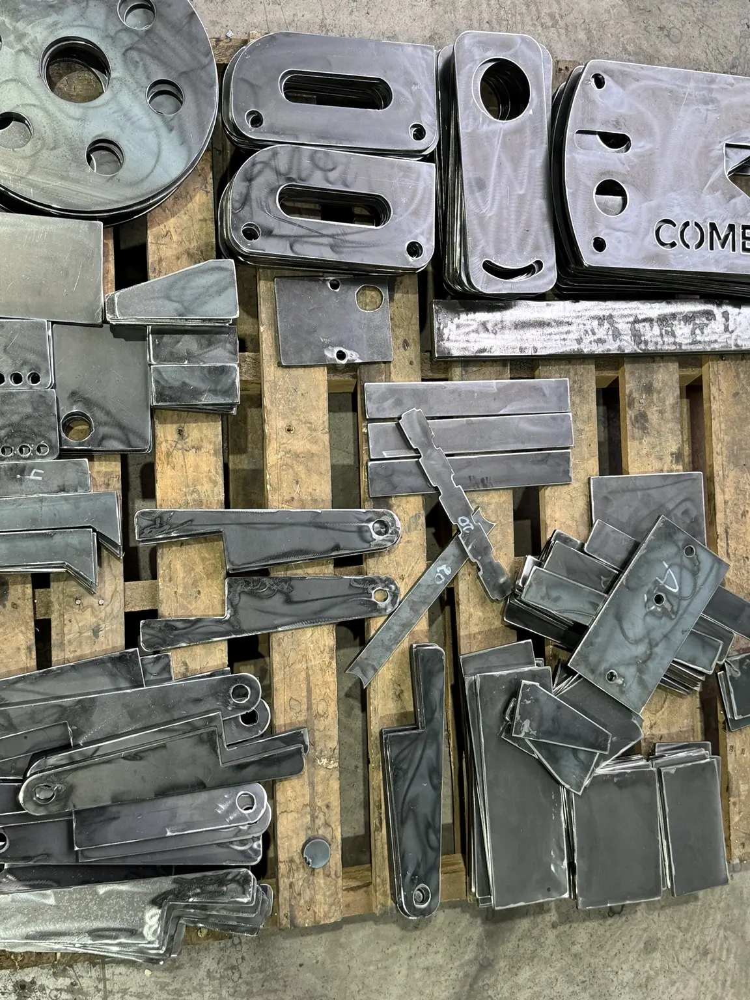

Trabajo real · Corte y fabricación
Fabricación de piezas metálicas
Producción de piezas con distintas formas y perforaciones, seleccionando el corte según su geometría y tamaño; las piezas mayores incluyen oxicorte y el acabado contempla esmerilado de bordes.






Caso documentado
Necesidad, equipos y resultado
- Necesidad
- Producir lotes de componentes en diferentes formas y medidas.
- Equipos
- Plasma, punzonado, mecanizado y terminación.
- Resultado
- Piezas clasificadas y listas para integración o despacho.